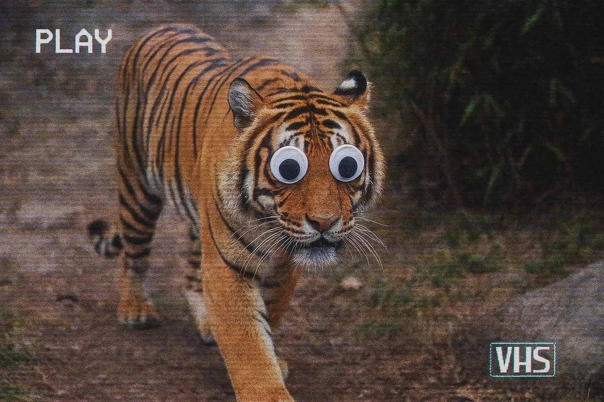

사이먼은 호랑이 영상을 시력이 흐려질 때까지 응시했다. 70시간 근무 주간 중 47시간째를 수염을 색보정하고 줄무늬를 선명하게 하는 데 쓰고 있었다. 내셔널 지오그래픽은 완벽함을 기대했지만, 그의 영혼은 혼돈을 갈망했다.
[Simon stared at the tiger footage until his vision blurred, the forty-seventh hour of his seventy-hour workweek spent color-correcting whiskers and sharpening stripes. National Geographic expected perfection, but his soul craved chaos.]
와콤 펜이 그의 손가락 사이에서 떨렸다. 그의 칸막이 밖에서는 내셔널지오그래픽 제작 현장이 자신의 일이 여전히 중요하다고 믿는 사람들의 신성한 근면함으로 웅웅거렸다. 동물들이 동물적인 행동을 하는 영상을 3년 동안 향상시키는 일은 사이먼을 열정적인 예술가에서 공허한 눈을 가진 좀비로 변모시켰다. 그의 초현실주의 애니메이션 프로젝트 포트폴리오는 이제 거의 열어보지도 않는 하드 드라이브에서 디지털 먼지만 쌓이고 있었다.
[The Wacom pen trembled between his fingers. Outside his cubicle, the NatGeo production floor hummed with the sacred industriousness of people who still believed their work mattered. Three years of enhancing footage of animals doing animal things had transformed Simon from eager artist to hollow-eyed zombie. His portfolio of surrealist animation projects gathered digital dust on a hard drive he barely opened anymore.]
“벵골 호랑이 시퀀스를 5시까지 부탁해,” 그의 상사인 다이애나가 걸음을 멈추지도 않고 외쳤다.
[“Need the Bengal tiger sequence by five,” his supervisor, Diana, called out, not bothering to stop walking.]
사이먼은 인정한다는 듯 으르렁거리더니, 비상용 위스키를 보관하는 서랍을 힐끗 보았다. 아직 너무 이른 시간이었다. 대신, 그는 더 영감이 넘치던 시절에 만들었던 터무니없는 디지털 창작물들이 담긴 개인 에셋 라이브러리—디지털 잡동사니 서랍—를 클릭해 열었다.
[Simon grunted acknowledgment, then glanced at the drawer where he kept his emergency whiskey. Too early. Instead, he clicked open his personal asset library—a digital junk drawer of ridiculous digital creations he’d made during more inspired times.]
“만약에…” 그는 우스꽝스럽게 커다란 구글리 눈을 호랑이에게 드래그하며 속삭였다.
[“What if…” he whispered, dragging comically oversized googly eyes onto the tiger.]
위엄 있는 포식자는 순식간에 우스꽝스럽게 품위를 잃은 모습으로 변했다. 사이먼은 코웃음을 치다가 스스로를 제지하고 불안하게 주위를 둘러보았다. 그의 동료들은 각자 자신의 화면에 몰두한 채 각자의 야생동물 향상 작업에 빠져 있었다.
[The majestic predator instantly transformed into something hilariously undignified. Simon snorted, then caught himself, glancing around nervously. His colleagues remained hunched over their own screens, each lost in their respective wildlife enhancements.]
그는 이것을 삭제해야 했다. 삭제할 것이다. 하지만 먼저, 짧은 영상만 렌더링해보고 싶었다—그저 움직임을 확인하기 위해서.
[He should delete it. He would delete it. But first, he’d render just a snippet—just to see it move.]
20분 후, 사이먼은 웃음으로 인한 눈물을 닦아냈다. “순다르반스의 포식자들” 다큐멘터리의 주인공인 위엄 있는 벵골 호랑이가 이제 우스꽝스럽게 흔들리는 만화 눈을 달고 수풀 사이를 배회하고 있었다. 그 두려운 존재감은 두 개의 디지털 원으로 완전히 무너져 내렸다.
[Twenty minutes later, Simon wiped tears of laughter from his eyes. The regal Bengal tiger, star of their “Predators of the Sundarbans” documentary, now stalked through the underbrush with absurd, wobbling cartoon eyes. Its fearsome presence utterly demolished by two digital circles.]
“끝났어?” 다이애나가 그의 책상 옆에 갑자기 나타났다.
[“Finished?” Diana materialized beside his desk.]
사이먼은 손가락이 거의 탈구될 정도로 빠르게 Alt-Tab을 눌렀다. “거의요. 마지막 색상 밸런스 작업 중입니다.”
[Simon slammed Alt-Tab so quickly he nearly dislocated a finger. “Almost. Final color balance.”]
“서둘러. 스트리밍 프리뷰가 오늘 밤에 공개돼. 그리고 네가 시니어 에디터니까 평소의 품질 검사 없이 바로 업로드될 거야—우리가 북극 프로젝트 마감으로 인력이 부족하거든.”
[“Well, hurry up. The streaming preview goes live tonight. And since you’re a senior editor, it’ll upload directly without the usual QC review—we’re short-staffed with the Arctic project deadline.”]
그녀가 걸어가자, 사이먼은 한숨을 내쉬고 자신의 우스꽝스러운 창작물을 복원했다. 실제 작업을 완료하기 전에 개인적인 즐거움을 위해 저장하려고 했다.
[As she walked away, Simon exhaled and restored his ridiculous creation, intending to save it for personal amusement before completing the actual work.]
그의 휴대폰이 진동했다. 어머니가 또 넷플릭스 비밀번호를 물어보고 있었다. 사이먼은 빠르게 답장을 타이핑하고 전송한 뒤 다시 돌아보았다—
[His phone buzzed. His mother needed his Netflix password. Again. Simon typed a quick reply, hit send, and turned back to—]
이런.
[Oh no.]
그의 화면에는 프로젝트 업로드 창이 표시되어 있었다: “업로드 완료.” 구글리 눈을 단 혐오스러운 것이 아니길. 제발, 그것만은—
[His screen showed the project upload window: “Upload Complete.” Not the googly-eyed abomination. Please, not the—]
“사이먼? 회의실로. 당장.”
[“Simon? Meeting room. Now.”]
회의실은 장례식장 같은 분위기였다. 다이애나는 내셔널지오그래픽의 악명 높게 유머 감각이 없는 디지털 배포 총괄 이사인 아담 그린 옆에 뻣뻣하게 앉아 있었다. 항상 입술을 오므리고 있는 아담은 이제 노트북을 응시하며 입술을 꽉 다물고 있었다.
[The conference room felt like a funeral parlor. Diana sat stiffly beside Adam Green, NatGeo’s notoriously humorless Executive Director of Digital Distribution. Adam’s perpetually pursed lips now formed a tight line as he stared at a laptop.]
“이것을 설명해봐,” 다이애나가 분노와 공포가 뒤섞인 표정으로 노트북을 그에게 밀었다.
[“Explain this,” Diana pushed the laptop toward him, her expression a mixture of fury and panic.]
화면에는 호랑이—그의 호랑이—가 그 우스꽝스러운 구글리 눈을 달고 정글을 배회하고 있었다. 구석에 있는 조회수 카운터는 빠르게 올라가고 있었다.
[On screen was the tiger—his tiger—with those ridiculous googly eyes, stalking through the jungle. The view counter in the corner was climbing rapidly.]
“고칠 수 있습니다,” 사이먼이 입이 마른 채 빠르게 말했다. “그저—”
[“I can fix it,” Simon said quickly, his mouth dry. “It was just—”]
“40분 동안 라이브 상태였어,” 아담이 말을 끊었고, 각 단어는 사형 집행인의 도끼처럼 떨어졌다. “이건 그냥 유튜브 채널이 아니라고, 머서 씨. 이건 내셔널 지오그래픽이야.”
[“It’s been live for forty minutes,” Adam interrupted, each word falling like an executioner’s ax. “This isn’t some YouTube channel, Mr. Mercer. This is National Geographic.”]
사이먼의 위장이 추락했다. 3년간의 고된 작업이 부주의한 한 순간에 증발해버렸다. “죄송합니다, 저는—”
[Simon’s stomach plummeted. Three years of grueling work, evaporated in one careless moment. “I’m sorry, I—”]
“댓글 섹션이 폭발하고 있어,” 아담이 갑자기 어조를 바꾸며 계속했다. “이 숫자들을 봐.”
[“The comments section is exploding,” Adam continued, his voice suddenly shifting. “Look at these numbers.”]
다이애나는 화면을 다시 돌렸고, 그녀의 분노는 잠시 혼란으로 대체되었다. “‘8살 아이가 강요 없이 다큐멘터리를 처음으로 끝까지 봤어요.’ '울 때까지 웃다가 실제로 뭔가를 배웠어요.’ '이런 거 더 보고 싶어요!’”
[Diana turned the screen back, her anger momentarily displaced by confusion. “'First time my eight-year-old has watched a documentary without being forced.’ 'Laughed until I cried, then actually learned something.’ 'More of this, please!’”]
“이해가 안 됩니다,” 사이먼이 말했다.
[“I don’t understand,” Simon said.]
아담이 눈을 찌푸리며 앞으로 몸을 기울였다. “우리 프리뷰가 바이럴이 됐어. 시청률이 전례 없는 수준으로 급증하고 있어—평소 출시 지표의 20배야. 모든 소셜 플랫폼에서 이것을 공유하고 있어.” 그는 의도적으로 노트북을 딸깍 소리와 함께 닫았다. “그러니 말해봐, 대답하기 전에 신중하게 생각해: 우리의 주력 자연 다큐멘터리를 의도적으로 방해한 거야?”
[Adam leaned forward, eyes narrowing. “Our preview has gone viral. Viewership is spiking at unprecedented levels—twenty times our normal launch metrics. Every social platform is sharing it.” He closed the laptop with a deliberate click. “So tell me, and think very carefully before answering: Did you deliberately sabotage our flagship nature documentary?”]
방 안의 공기가 갑자기 얇아진 것 같았다. 사이먼은 거짓말을 할까 고민하며 생존 확률을 계산하다가 한숨을 쉬었다. “아니요. 그건… 그냥 장난치고 있었어요. 제 정신을 유지하기 위해서요.”
[The air in the room felt suddenly thin. Simon considered lying, calculating his odds of survival, then sighed. “No. It was… I was just playing around. Keeping myself sane.”]
영겁의 시간처럼 느껴지는 침묵이 흘렀다. 그리고 아담이 웃었다—사이먼이 그에게서 한 번도 들어본 적 없는 짧고 믿기지 않는 소리였다.
[A silence fell that seemed to stretch for eons. Then Adam laughed—a short, disbelieving sound that Simon had never heard from him before.]
“음, 정신 건강 휴식에 축하해. 그게 이 부서의 예산을 살릴지도 모르겠군.”
[“Well, congratulations on your mental health break. It might just save this division’s budget.”]
2주 후, 사이먼은 작은 나비넥타이를 한 코끼리 영상을 검토하며 자신의 새 사무실—실제로 문이 있는 사무실—에 앉아 있었다. 급하게 승인된 “야생동물 재해석” 시리즈는 누구의 예상보다도 폭발적인 인기를 끌었다.
[Two weeks later, Simon sat in his new office—an actual office with a door—reviewing footage of elephants with tiny bowties. The hastily-approved “Wildlife Reimagined” series had exploded beyond anyone’s expectations.]
“사건” 이후 혼란스러운 날들 동안 그에게 거의 말을 걸지 않았던 다이애나는 시청자 수가 계속 증가하면서 점차 누그러졌다. 그의 받은 편지함에는 이전에는 그의 존재를 무시했던 부서들로부터 “사이먼 처리"에 대한 내부 요청으로 넘쳐났다.
[Diana, who had barely spoken to him during the chaotic days following "the incident,” had gradually thawed as the viewer numbers continued to climb. His inbox overflowed with internal requests for “the Simon treatment” from departments that had previously ignored his existence.]
그는 시청자들의 댓글과 메시지를 읽는 데 몇 시간을 보냈고, 얼마나 많은 아이들이 갑자기 야생동물 보호에 관심을 갖게 되었는지를 보고 감동받았다. 오래 전에 자신의 일이 중요하다는 믿음을 잃어버렸던 사이먼은 이제 다시 미소 짓게 만드는 교육적 개념을 스케치하고 있었다.
[He’d spent hours reading comments and messages from viewers, surprised to find himself moved by how many children were suddenly engaging with wildlife conservation. Simon, who had long ago stopped believing his work mattered, found himself sketching educational concepts that made him smile again.]
그는 책상에서 비상용 위스키—이제는 축하용 위스키—를 꺼내 조금 따르며 다이애나가 화해의 표시로 인쇄해서 액자에 넣어준 가장 좋아하는 시청자 댓글을 읽었다:
[He pulled the emergency whiskey from his desk—now a celebration whiskey—and poured a thimbleful as he read his favorite viewer comment, printed and framed by Diana as an olive branch:]
“친애하는 야생동물 담당자님, 저는 웃긴 눈을 가진 호랑이를 보기 전까지는 호랑이를 구하는 것에 관심이 없었어요. 이제 호랑이들이 살 곳이 줄어들고 있다는 것을 알게 되었는데, 그건 웃긴 일이 아니에요. 저는 제 돼지 저금통을 깨서 27달러 40센트를 호랑이들을 돕기 위해 보내려고 해요. 7살 에마로부터.”
[“Dear Mr. Wildlife Person, I didn’t care about saving tigers until I saw one with funny eyes. Now I know they are running out of places to live, which isn’t funny. I broke my piggy bank and am sending $27.40 to help them. From Emma, age 7.”]
“사건” 발생 3주 후, 사이먼은 제작 보조가 그의 마이크를 조정하는 동안 “창의적 비전가"라고 적힌 감독 의자에 앉았다.
[Three weeks after "the incident,” Simon sat in a director’s chair labeled “Creative Visionary” as a production assistant adjusted his microphone.]
“3, 2초 후 촬영 시작…” 인터뷰 진행자가 그를 보고 환하게 웃었다.
[“Rolling in three, two…” The interviewer beamed at him.]
“사이먼 씨, '야생동물 재해석'이 올해의 스트리밍 센세이션이 되었습니다. 단 몇 주 만에 5천만 뷰를 넘었죠. 자연 다큐멘터리에 혁명을 일으킨 기분이 어떠신가요?”
[“So, Simon, 'Wildlife Reimagined’ has become the streaming sensation of the year. Over fifty million views in just weeks. How does it feel to revolutionize nature documentaries?”]
사이먼은 지난 한 달간의 소용돌이를 아직도 처리하면서 카메라를 응시했다. 방 안의 사람들은 기대에 찬 눈으로 기다렸다.
[Simon stared into the camera, still processing the whirlwind of the past month. The room waited expectantly.]
“저는 그저…” 그는 말을 시작했다, 갑자기 협업하고 싶어하는 동료들과 옛 학교 친구들의 놀란 전화를 떠올리며.
[“I just…” he began, remembering the stunned calls from colleagues and former classmates who suddenly wanted to collaborate.]
“저는 그저 자연이 자신을 너무 심각하게 생각하고 있다고 생각했어요,” 그는 마침내 말했다, 입가 한쪽이 몇 년 만에 처음으로 진정한 미소로 올라가면서. “그리고 아마도 우리도 그랬던 것 같아요. 다음 주에는 아이들이 멸종 위기 서식지에 대해 배우면서 자신만의 야생동물 변형을 디자인할 수 있는 인터랙티브 시리즈를 출시할 예정입니다. 알고 보니, 때로는 사람들이 당신을 정말로 보기 전에 우스꽝스러워 보일 필요가 있더군요.”
[“I just thought nature was taking itself too seriously,” he finally said, as the corner of his mouth twitched upward into the first genuine smile he’d had in years. “And maybe we were too. Next week, we’re launching an interactive series where kids can design their own wildlife enhancements while learning about endangered habitats. Turns out, sometimes you need to look ridiculous before people really see you.”]
인터뷰 진행자 뒤의 거대한 모니터에서는 우스꽝스러운 구글리 눈을 가진 호랑이가 화면을 가로질러 걸어가고 있었다. 그 호랑이는 자신도 모르게 하나의 흐름을 이끌고 있었고, 마침내 사이먼의 창의력이 마음껏 펼쳐질 수 있도록 해주고 있었다.
[Behind the interviewer, on a massive monitor, a tiger with ridiculous googly eyes padded across the screen, unwittingly leading a movement that had finally let Simon’s creativity roam free.]